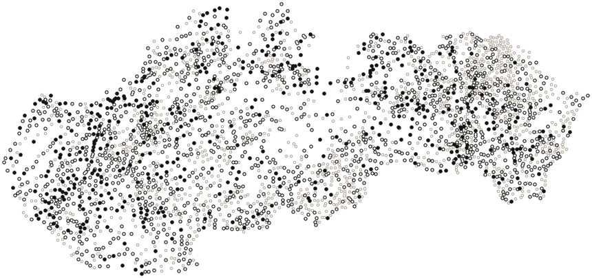

Kraje a okresy
Výsledky volieb 2026 a kontrola záznamov po krajoch a okresoch. Číslo pri okrese je počet obcí a mestských častí.
Banskobystrický kraj
- Banská Bystrica 42
- Banská Štiavnica 15
- Brezno 30
- Detva 15
- Krupina 36
- Lučenec 57
- Poltár 22
- Revúca 42
- Rimavská Sobota 107
- Veľký Krtíš 71
- Zvolen 25
- Žarnovica 18
- Žiar nad Hronom 35
Bratislavský kraj
Košický kraj
- Gelnica 20
- Košice - okolie 114
- Košice I 6
- Košice II 8
- Košice III 2
- Košice IV 6
- Michalovce 78
- Rožňava 62
- Sobrance 47
- Spišská Nová Ves 36
- Trebišov 82
Nitriansky kraj
- Komárno 41
- Levice 89
- Nitra 62
- Nové Zámky 62
- Topoľčany 54
- Zlaté Moravce 33
- Šaľa 13
Prešovský kraj
- Bardejov 86
- Humenné 61
- Kežmarok 41
- Levoča 33
- Medzilaborce 23
- Poprad 29
- Prešov 91
- Sabinov 43
- Snina 34
- Stará Ľubovňa 44
- Stropkov 43
- Svidník 68
- Vranov nad Topľou 68
Trenčiansky kraj
- Bánovce nad Bebravou 43
- Ilava 21
- Myjava 17
- Nové Mesto nad Váhom 34
- Partizánske 23
- Považská Bystrica 28
- Prievidza 52
- Púchov 21
- Trenčín 37
Trnavský kraj
Žilinský kraj
- Bytča 12
- Dolný Kubín 24
- Kysucké Nové Mesto 14
- Liptovský Mikuláš 56
- Martin 43
- Námestovo 24
- Ružomberok 25
- Turčianske Teplice 26
- Tvrdošín 15
- Čadca 23
- Žilina 53
Kde sme mali dokument obce na porovnanie
- dokument porovnaný s údajmi (484)
- dokument archivovaný, neporovnaný (1 305)
- dokument sme nenašli (1 135)

Mapa ukazuje pokrytie dokumentmi, nie kvalitu výsledkov. Sivý krúžok znamená, že porovnanie chýba, nie že je výsledok čistý.
Bod = obec alebo mestská časť, nie okrsok; Bratislava a Košice sú zobrazené po mestských častiach. Porovnaný dokument môže byť aj súhrn obce, nie zápisnica každého okrsku.
Zdroj: data/protocols2026/manifest.csv, out/2026/protocols_vs_definitive.csv · stav 26. 10. 2026
Čísla v tabuľke
| Kraj | Obce | Porovnaný dokument | Len archivovaný | Nenájdený |
|---|---|---|---|---|
| Banskobystrický kraj | 515 | 46 | 226 | 243 |
| Bratislavský kraj | 88 | 24 | 40 | 24 |
| Košický kraj | 461 | 74 | 218 | 169 |
| Nitriansky kraj | 354 | 57 | 165 | 132 |
| Prešovský kraj | 664 | 90 | 254 | 320 |
| Trenčiansky kraj | 276 | 58 | 130 | 88 |
| Trnavský kraj | 251 | 67 | 128 | 56 |
| Žilinský kraj | 315 | 68 | 144 | 103 |
Výber údajov: sk_obce_centroids.csv (EPSG:5514) ⋈ stránky obcí; kategória: protocols_vs_definitive.parquet primary (obec) / data/protocols2026/manifest.csv (obec) / nič